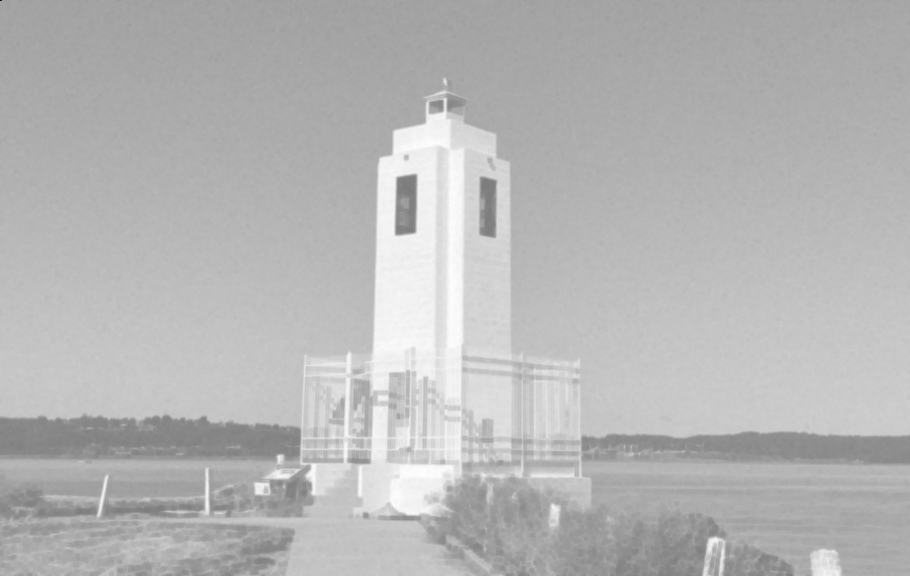

Filtering - Learning Reflection
Author: Tony Fu
Date: August 21, 2023
Device: MacBook Pro 16-inch, Late 2021 (M1 Pro)
Code: GitHub
Reference: Chapter 5 Digital Image Processing with C++: Implementing Reference Algorithms with the CImg Library by Tschumperlé, Tilmant, Barra
1. Convolution
CImg<> sobel(3, 3, 1, 1, 0);
sobel(0, 0) = -1; sobel(0, 1) = -2; sobel(0, 2) = -1;
sobel(1, 0) = 0; sobel(1, 1) = 0; sobel(1, 2) = 0;
sobel(2, 0) = 1; sobel(2, 1) = 2; sobel(2, 2) = 1;
imgIn.convolve(sobel);
The above code snippet shows how to perform a convolution on an image with a 3x3 Sobel filter. The result is shown below:
- Original:

- Convolution:

Boundary Conditions
Boundary conditions specify how to handle the edges and can be specified using the const usigned int boundary_conditions parameter of the convolve() method. The four boundary conditions provided by the CImg library have specific meanings:
-
Dirichlet (0): The pixels outside the image boundaries are considered to be zero. This creates a sort of "hard" edge around the image and can lead to noticeable artifacts along the borders.
-
Neumann (1) (default): The value of the border pixels is extended outside the image boundaries. Essentially, this reflects the gradient at the border, assuming that the intensity of the image doesn't change beyond the edge. This is the default boundary condition in CImg and tends to provide visually acceptable results.
-
Periodic (2): The image is treated as if it were tiling the plane in a repeated pattern. This means that the pixels on the right edge of the image are used as the boundary condition for the left edge, and the pixels on the bottom are used for the top. This can create seamless transitions but can also lead to strange effects if the image does not naturally tile.
-
Mirror (3): The pixels outside the image boundaries are determined by mirroring the pixels inside the boundaries. Imagine folding the image over at its edges, so the pixels just inside the border are duplicated just outside the border. This can create a more visually smooth transition at the edges but may not be appropriate for all types of images.
2. Median Fitler
img.blur_median(3);
The above code snippet shows how to perform a median filter on an image with a 3x3 window. The result is shown below:
- Origin:

- Median Filter:

Order-Statistic (OS) Filter
An OS filter (Bovik, Huang, and Munson, 1983) is a non-linear filter that computes a linear combination of these sorted values:
where are the weights that define how much each ordered value contributes to the final result, and are the sorted values of the neighborhood pixels.
3. First-Order Derivatives
The get_gradient function computes the image gradient along specified axes using different numerical schemes.
Parameters
axes: Axes considered for the gradient computation (e.g., "xy").scheme: Numerical scheme used for the gradient computation. Options are:
Schemes
-
Backward Finite Differences (
scheme = -1) Computes the gradient using backward finite differences: -
Central Finite Differences (
scheme = 0) Computes the gradient using central finite differences: -
Forward Finite Differences (
scheme = 1) Computes the gradient using forward finite differences: -
Sobel Scheme (
scheme = 2) Utilizes Sobel operators to compute the gradient. -
Rotation Invariant Scheme (
scheme = 3) Uses a rotation-invariant kernels:where and .
-
Deriche Recursive Filter: Introduced later.
- Van Vliet Recursive Filter: Introduced later.
| Scheme | Applications | Pros | Cons |
|---|---|---|---|
| Backward finite differences | General-purpose | Simple, easy to implement | Less accurate, sensitive to noise |
| Centered finite differences | General-purpose | More accurate than forward/backward | Sensitive to noise |
| Forward finite differences | General-purpose | Simple, easy to implement | Less accurate, sensitive to noise |
| Using Sobel kernels | Edge detection | Good at capturing edges, less noisy | Can miss fine details |
| Using rotation invariant | Edge detection, texture analysis | Rotation invariant, captures subtle edges | More computationally expensive |
| Using Deriche recursive filter | Smoothing, edge detection | Smooths noise, good edge detection | Computationally expensive |
| Using Van Vliet recursive filter | Smoothing, edge detection | Smooths noise, efficient computation | Might blur some edges |
Example
// Gradient approximation using centered finite differences.
CImgList<> grad = imageIn.get_gradient();
// Norm and phase of the gradient.
CImg<>
norm = (grad[0].get_sqr() + grad[1].get_sqr()).sqrt(),
phi = grad[1].get_atan2(grad[0]);
- Original
- Gradient X

- Gradient Y

- Gradient Norm

- Gradient Phase

4. Second-Order Derivatives
Second-order derivatives are useful for detecting edges (when combined with thresholding and non-maximum suppression). However, they are more commonly used for feature detection, a topic that will be covered in Chapter 6.
4.1 Laplacian
The Laplacian operator calculates the divergence of the gradient of the image, effectively highlighting regions where there is a rapid change in intensity.
void Laplacian(CImg<> &imageIn)
{
CImg<> laplacian = imageIn.get_laplacian();
laplacian.normalize(0, 255).save("./results/lighthouse_laplacian.png");
}
Mathematically, it is represented as:
4.2 Hessian
The Hessian matrix consists of the second-order partial derivatives of the image.
void Hessian(CImg<> &imageIn)
{
CImg<> Ixx = imageIn.get_hessian("xx")[0];
// ... rest of the code ...
}
It is mathematically expressed as:
-
Hessian XX

-
Hessian YY

-
Hessian XY

4.3 LoG (Laplacian of Gaussian)
LoG combines Gaussian smoothing with the Laplacian operator.
void LoG(CImg<> &imageIn)
{
CImg<> log = imageIn.get_blur(2).laplacian();
// ... rest of the code ...
}
The expression for LoG is:
where is the Gaussian function.

4.4 DoG (Difference of Gaussian)
DoG approximates the LoG by taking the difference between two blurred images with different standard deviations.
void DoG(CImg<> &imageIn)
{
CImg<> gauss1 = imageIn.get_blur(1);
CImg<> gauss2 = imageIn.get_blur(2);
CImg<> dog = gauss1 - gauss2;
// ... rest of the code ...
}
Mathematically, DoG is represented as:
where and are Gaussian functions with standard deviations and , respectively.
Summary
| 2nd-Order Derivative | Applications | Pros | Cons |
|---|---|---|---|
| Laplacian | Edge Detection | Sensitive to edges, Simple computation | Noisy, Sensitive to noise |
| Hessian | Feature Detection | Captures second-order information, Rich features | Computationally expensive |
| LoG (Laplacian of Gaussian) | Edge Detection, Feature Detection | Reduces noise, Effective edge detection | Slower than DoG |
| DoG (Difference of Gaussian) | Edge Detection, Approximation of LoG | Faster approximation of LoG | Less accurate than LoG |
5. Adaptive Filtering (Sigma Filter)
Traditional smoothing filters often blur the edges along with reducing noise, causing a loss of important details. On the other hand, adaptive or other nonlinear filters like the sigma filter promise to reduce noise in images while preserving edges and contours. The method is based on the principle of weighting the influence of neighboring pixels based on the gradient, similar to some normalization or shunting mechanisms found in neuroscience.
1. Gradient Calculation
First, the code calculates the gradient of the input image using the get_gradient() method:
CImgList<> g = imgIn.get_gradient();
CImg<> grad = (g[0].get_sqr() + g[1].get_sqr()).sqrt();
The gradient, , quantifies the rate of change in pixel values across the image and is given by the formula:
2. Sum of Gradients
Next, the sum of gradients in a 3x3 neighborhood is computed:
CImg<> Sgrad = grad.get_convolve(CImg<>(3, 3, 1, 1, 1));
This step convolves the gradient with a 3x3 filter, summing the neighboring gradients, effectively measuring local variations in pixel intensities.
3. Adaptive Weighting
The code then applies adaptive weighting using the following lines:
float epsilon = 100;
CImg<> rap = imgIn.get_div(grad + epsilon);
Here, the division acts as a weighting coefficient, with the epsilon term preventing division by zero. The weight of a pixel in the sum is inversely proportional to the local gradient:
In rap, the pixels with high gradients are weighted less, but in this case, less actually means darker pixels! So, this code is emphasizing the edges and contours of the image.
We started with this image:

And ended up with this:
4. Smoothing Operation
The smoothing operation is performed in the following lines:
CImg_3x3(I, float); // declare Ipp, Ipc, etc.
cimg_for3x3(rap, x, y, 0, 0, I, float)
imgOut(x, y) = (Ipp + Ipc + Ipn + Icp + Icc + Icn + Inp + Inc + Inn) / (Sgrad(x, y) + epsilon);
Here, CImg_3x3(I, float); declares variables like Ipp, Ipc, etc., representing the neighboring pixels. The cimg_for3x3 macro iterates through the image, applying the smoothing operation. The numerator is a simple average (actually sum) filter, and the bottom term is larger for pixels with high gradients. Therefore, we emphasize the edges and contours again by making those pixels darker.
The final formula for smoothing is:

As you can see, the noise are amplified along with the edges are emphasized. This adaptive sigma filter may not be the best choice for this image.
The somewhat cartoon-like appearance of the final output image is a common effect of adaptive smoothing techniques like the sigma filter. By emphasizing edges and smoothing uniform areas, the image can take on a more stylized or abstract appearance.
Connection to Neuroscience
The adaptive nature of this method is akin to the way some neurons modulate their response based on local activity. It aligns with principles observed in neuroscience where the influence of neighboring neurons is normalized or shunted based on the local context, allowing for a balance between sensitivity to stimuli and adaptation to the local environment.
6. Adaptive Window Filters
Adaptive window filters are smart filters that change their behavior based on the characteristics of the area they are working on. They look at each pixel and decide the best way to smooth or sharpen it based on the pixels around it. There are different ways to do this, and here are three examples using the following noisy image (Gaussian noise ):
6.1 Nagao Filter
Imagine you have a small grid (usually 5x5) around a pixel in the middle. In this grid, you create 9 different windows (smaller groups of pixels), each containing 9 pixels. Here we first intialize the windows:
CImgList<unsigned char> Nagao(9, 5, 5, 1, 1, 0);
Nagao(0, 0, 0) = Nagao(0, 0, 1) = Nagao(0, 0, 2) = Nagao(0, 0, 3) =
Nagao(0, 0, 4) = Nagao(0, 1, 1) = Nagao(0, 1, 2) = Nagao(0, 1, 3) =
Nagao(0, 2, 2) = 1;
for (int i = 1; i < 4; ++i)
Nagao[i] = Nagao[0].get_rotate(i * 90);
Nagao(4, 1, 1) = Nagao(4, 1, 2) = Nagao(4, 1, 3) = Nagao(4, 2, 1) =
Nagao(4, 2, 2) = Nagao(4, 2, 3) = Nagao(4, 3, 1) = Nagao(4, 3, 2) =
Nagao(4, 3, 3) = 1;
Nagao(5, 0, 0) = Nagao(5, 0, 1) = Nagao(5, 0, 2) = Nagao(5, 1, 0) =
Nagao(5, 1, 1) = Nagao(5, 1, 2) = Nagao(5, 2, 0) = Nagao(5, 2, 1) =
Nagao(5, 2, 2) = 1;
for (int i = 1; i < 4; ++i)
Nagao[5 + i] = Nagao[5].get_rotate(i * 90);

For each window:
- You calculate the average color (mean) and how much the colors vary (variance).
- You pick the window where the colors vary the least (smallest variance).
- You replace the middle pixel with the average color from that chosen window.
Here is the code:
CImg<>
mu(9, 1, 1, 1, 0),
sigma(9, 1, 1, 1, 0),
st,
N(5, 5);
CImg<int> permutations;
cimg_for5x5(imgIn, x, y, 0, 0, N, float)
{
CImgList<> res(9);
for (int i = 0; i < 9; ++i)
{
res[i] = N.get_mul(Nagao[i]);
st = res[i].get_stats();
mu[i] = st[2];
sigma[i] = st[3];
}
// Searching minimal variance.
sigma.sort(permutations);
imgOut(x, y) = mu[permutations[0]];
}

This method helps to keep the details in the image while reducing noise.
6.2 Kuwahara Filter
The Kuwahara filter is like the Nagao filter, but only uses windows 5 - 8 of Nagao filter. It's just a variation that might work better on certain types of images. The basic idea of finding the least varying window and using its average color remains the same.


7. Deriche Recursive Filters
John Canny's work on edge detection is not only confined to the Canny edge detector but also includes mathematical foundations for defining the criteria of an effective edge detector. Canny outlined three criteria: good detection, good localization, and a single response. The first two criteria can be combined to yield a so-called Canny criterion value, adding mathematical rigor to the field of edge detection.
The Deriche recursive filter is an recursive solution to Canny's criteria. However, in the book, Deriche filter is presented as a family of recursive (and potentially more efficient) alternatives to smoothing operation (0-th order), gradient computation (1st order), and Laplacian computation (2nd order).
The function CImg<T>& deriche(const float sigma, const unsigned int order=0, const char axis='x') filter applies in one direction at once. sigma is the standard deviation of the filter, while order is the order of the derivative to compute. axis is the axis along which the filter is applied.
7.1 Smoothing (0-th Order)
CImg<> img_deriche0 = imgIn.get_deriche(SIGMA, 0, 'x');
img_deriche0.deriche(SIGMA, 0, 'y');
7.2 Gradient Computation (1st Order)
CImg<> img_deriche1 = imgIn.get_deriche(SIGMA, 1, 'x');
img_deriche1.deriche(SIGMA, 1, 'y');
CImg<> img_deriche1_norm = (img_deriche1.get_sqr() += img_deriche1.get_sqr()).sqrt();

7.3 Laplacian Computation (2nd Order)
CImg<> img_deriche2_x = imgIn.get_deriche(SIGMA, 2, 'x');
CImg<> img_deriche2_y = imgIn.get_deriche(SIGMA, 2, 'y');
CImg<> img_deriche2_laplacian = img_deriche2_x + img_deriche2_y;

8. Frequency Domain Filtering
8.1 Using CImg<>::FFT()
Load the image and convert to grayscale
CImg<unsigned char> img("../images/lighthouse.png");
CImg<> lum = img.get_norm().blur(0.75f);
Resize the image
FFT requires dimensions to be a power of 2, so resize the image to meet this requirement.
int width = 1 << static_cast<int>(std::ceil(std::log2(lum.width())));
int height = 1 << static_cast<int>(std::ceil(std::log2(lum.height())));
lum.resize(width, height, -100, -100, 0);
Compute the FFT
CImgList<> fft = lum.get_FFT();
Process Magnitude
Take the logarithm of the magnitude part to better visualize it, and then shift the zero frequency component to the center of the spectrum.
CImg<> magnitude(fft[0]);
magnitude += 1; // Avoid log(0)
magnitude.log();
magnitude.shift(magnitude.width() / 2, magnitude.height() / 2, 0, 0, 2);
(Optional) Compute Inverse FFT
Perform the inverse FFT to recover the original image.
CImg<> img_ifft = fft.get_FFT(true)[0];
8.2 Butterworth Filters
The idea of frequency-domain filtering involves first transforming the image into the frequency domain, then multiplying the image with a mask, and finally transforming the image back to the spatial domain. Theoretically, this is equivalent to convolving the image with the mask in the spatial domain. It might sound like a lot of extra work, but the Fast Fourier Transform (FFT) makes it much faster. However, you need to be mindful of artifacts such as the Gibbs phenomenon, which can be reduced by using appropriate windowing functions.
Butterworth filters are a family of filters characterized by a maximally flat frequency response. They can be applied in both analog and digital forms, and in both time and frequency domains.
In the analog frequency domain, the 2D transfer function for a Butterworth low-pass filter can be represented as: where is the distance from the origin in the frequency domain, and is the cutoff frequency. The parameter is the order of the filter. Increasing will result in a steeper roll-off, but at the expense of increased complexity, potential instability, and possible phase distortion.
In the spatial domain, you would have to use the inverse Fourier transform to obtain a corresponding difference equation.
8.3 Gaussian Filters
The Gaussian filter can be implemented in both time and frequency domains Here's how to apply a Gaussian filter in the frequency domain:
Perform the Fast Fourier Transform (FFT)
First, compute the FFT of the input image.
CImgList<> fImg = imgIn.get_FFT();
Create the Gaussian Mask
Construct the frequency response of the filter using the Gaussian function. The Gaussian mask is defined in the frequency domain, and sigma is the standard deviation controlling the spread of the Gaussian function. In the frequency domain, the filter is described by the Gaussian function:
Here, and are the width and height of the image, is the squared standard deviation, and are the frequency coordinates.
CImg<> gaussMask(imgIn.width(), imgIn.height());
float sigma2 = cimg::sqr(sigma);
cimg_forXY(gaussMask, x, y)
{
float fx = x / (float)imgIn.width() - 0.5f, fx2 = cimg::sqr(fx),
fy = y / (float)imgIn.height() - 0.5f,
fy2 = cimg::sqr(fy);
gaussMask(x, y) = 2 * cimg::PI * sigma2 *
std::exp(-2 * cimg::sqr(cimg::PI) * sigma2 * (fx2 + fy2));
}
Zero Shift the Gaussian Mask
Shift the Gaussian mask by half its width and height to center the zero frequency.
// Zero shift.
gaussMask.shift(-imgIn.width() / 2, -imgIn.height() / 2, 0, 0, 2);
Apply the Filter
Perform the element-wise multiplication of the Fourier Transformed image and the Gaussian mask.
// Filtering
cimglist_for(fImg, k)
fImg[k].mul(gaussMask);
Inverse FFT and Normalize
Transform back to the spatial domain via inverse FFT and normalize the result.
// Inverse FFT and real part.
return fImg.get_FFT(true)[0].normalize(0, 255);